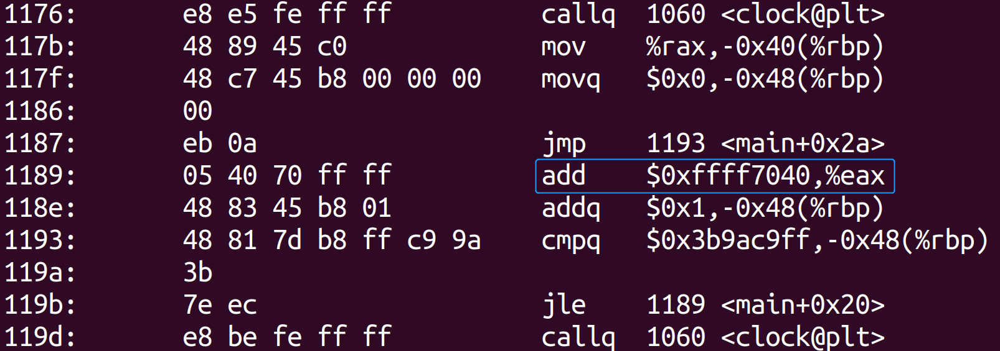

指令探索
x86架构下A系列寄存器算数操作（以ADD指令为例）的提速情况探索
课程名称：汇编与接口
学生姓名：云中君
学号：********
邮件地址：********@zju.edu.cn
一、探索背景
印象里是在学习数字逻辑时第一次听说累加器这样一个元件，但是在课上它并不是主角，记得当时老师只是随口一提，然后将大量的篇幅留给了复杂的带进位的加法器的实现，给人一种它没有很大应用场景或者使用效果并不理想的印象。所以当时也没有在意，直到后来在体系结构的课程上讲到了几种ISA class，其中包含了Accumulator类型，课上老师要求将一段简单的加法代码翻译成四种类型，在这个过程中，我发现它与RISC-V的load-store模式有很大的不同，甚至猜测在大量加法时感觉比起load-store可以提速不少，这也让我又一次注意到这个器件。
而在本门课的课堂上，在讲x86各个系列寄存器时，老师提到了A系列寄存器Accumulator Register，也就是累加器，它又一次出现在我面前。上课提到它会被自动分配给一些算数指令，也讲到了它的特殊性——add eax, 0xffff7040竟然比add ebx, 0xffff7040要快。老师的解释是编码上eax寄存器单独编码，比ebx短，因而更快，但是没有具体测试，只是参考了intel的手册。这也引起了我的兴趣，很好奇A系列寄存器作为累加器的作用，也想从这一点切入来进行探索，来探究其是否真的能够实现加速，以及指令编码更短是否确实对速度的提升有效果。
二、探索过程
1. 基于time.h的简易测试程序
因为此前没有接触过x86汇编的编写，我一时间不知道在什么平台运行汇编指令，以及怎么使用x86汇编指令进行计时。而对于记录程序运行时间，我们此前程序课程上用到最多的是方法是调用C语言的time.h库中的clock()函数，通过程序运行时间=程序运行的时钟周期/每秒的时钟周期数这一公式来实现比较精准的时间计算。
但是仅通过C语言来书写，显然不能够实现寄存器层面的绑定。使用C语言的加法，必然会分配到相同的寄存器用于处理。联系到操作系统课程中刚刚学习的内敛汇编相关知识，可以用于RISC-V的指令的执行，那应该也可以使用于x86指令，因此我编写了如下的第一段内联汇编，用以测试。
1 | asm( |
在运行时显示了如下错误，显示” too many memory references for add“，问题一定在于内联汇编不合规范。

仔细了解了内联汇编的规范，发现内联汇编似乎支持的是AT&T格式，与我们上课学习的intel格式不同。对于寄存器，需要加%前缀，而为了避免在汇编语句中%表示输入、输出操作数的混淆，需要加%%，而地址则需要加$前缀。这样修改后，仍然会出现错误，显示operand type mismatch for ‘add‘，进一步学习后发现，大多数该类的内联汇编代码实例都将立即数写于寄存器前，故修改如下，可以正常运行。
1 |
|
使用gcc编译后，对其进行反汇编，查看该程序对应的x86汇编代码，可以看到对应指令就是需要测试的指令。
 在Linux Ubuntu环境下每条指令循环十亿次，获得基本的速度情况，确实发现就这一条ADD指令来说EAX要快于EBX，但是相对来说相差并不明显。
将EAX/EBX的测试顺序交换，测试速度情况，以排除顺序的问题。
但是发现似乎对于反向顺序的测试，结果刚好相反，而且即使我在不同时间段、不同电脑运行模式以及不同重复次数的测试下得到的结果也类似
下图为电脑静音模式下的结果。
但是这样判断显然存在一些问题，也就是我仅仅执行了少数几次程序，对于结果比较明显（比如运行十次，每次都是eax快于ebx）的情况确实可以进行初步判断，但是对于一些结果有浮动的情况不能精确判断，那么仅仅运行10次并不具有参考意义。对此，我编写了一个shell脚本用于批量测试，实现运行多次程序，并求出结果的平均数（其中测试程序test输出ebx运行周期数/eax运行周期数）。
1 | !/bin/bash |
| 循环次数 | EBX时间/EAX时间（EAX先执行） | EBX时间/EAX时间（EBX先执行） | 平均 |
|---|---|---|---|
| 10^4 | 0.98396 | 1.07485 | 1.029405 |
| 10^5 | 0.99509 | 1.01436 | 1.004725 |
| 10^6 | 0.99185 | 1.01492 | 1.003385 |
| 10^7 | 1.00085 | 1.00216 | 1.001505 |
| 10^8 | 0.99907 | 1.00442 | 1.001745 |
怪异的是，在隔一段时间再去测试时，在测试重复次数较小时，结果情况又颠倒，eax先运行则eax慢于ebx，反之则快于ebx。具体情况如上表所示，由于重复次数过大会导致测试时间过长，而过小则很不精确，故此处选择10^4~10^8四个阶段进行测试。值得注意的是10^7时，结果显示均大于1，但是10^8时又不一样，则并不是随着循环次数增大而产生提速效果，显然这样的测试结果并不能十分清晰地说明问题。
2. 测试前后不一致的分析与改进
此前在数据结构与算法等课程上，对不同数据结构的性能测试上，我也普遍采用了这样一种软件层面的计时方法，那么此处的前后不一致让我着实摸不着头脑。
对这种情况，我猜想：
- 可能是因为调用的clock函数计时并不精准，或者在使用clock函数时，其中一些指令与eax/ebx的测试代码在流水线中运行存在依赖/冲突；
- 可能是因为同时进行测试，导致部分寄存器的情况在进入eax循环和进入ebx循环中时存在区别，且也可能存在指令依赖，但是分开测试又会存在不同时运行，CPU的状态可能差别较大的问题。
仅仅推测不能解决问题，故下面对这两个猜想进行逐一的分析和验证。
2.1 替换测试时间方法
仔细查看了反汇编代码，在main函数中clock()函数调用实际是执行了callq 1060 <clock@plt>这一条指令，也就是调用<clock@plt>中的函数，其对应的代码如下。
其中执行了bnd jmpq *0x2f5d，而这一指令似乎是一个系统调用，对于反汇编得到的代码来说，不能找到对应的代码。故尝试用gdb确认这一步具体的操作。

但是发现进入到这一条指令，就显示sysdeps...等，推测是进入了clock.c进行执行，那么继续从clock.c中探究似乎并没有意义，因为通过修改clock.c的代码来改善这一情况并不现实；而对于原有测试指令，也并不能再进一步精简。
对此，我在网上查资料的过程中，看到很多资料也指出使用软件方式计时可能会有较大的误差，并不精确。那么在对于指令速度的测试上，可能更适合用硬件层面的指令来完成。
要获取运行时间，在汇编中还有许多方法。其中一种是直接使用int 0x80调用time.c，进行系统调用，那么似乎与前面的clock()方法调用clock.c没有区别。而在查阅资料过程中，我发现在intel汇编指令中，指令rdtsc也可以用于获得CPU从上电开始总共经历的时钟周期数，它是隐含操作数指令，会将周期数高32位存在edx寄存器，低32位存在eax寄存器。
则两次使用该指令，并通过两处相减即可获取测试代码运行的时钟周期数，也就相应地可以求出运行时间，从而更准确地比较指令运行速度。但是进一步深入学习过程中，我发现由于CPU乱序执行的影响，要保证这一刻流水线已排空，即rdtsc要测量的指令已执行完，才能获取准确结果。所以rdtsc指令需要配合cpuid或lfence指令才能精确获取时间，而intel也提供了rdtscp指令（rdtsc+cpuid)。因此将clock()替换为如下函数进行测试。
1 |
|
| 循环次数 | EBX时间/EAX时间（EAX先执行） | EBX时间/EAX时间（EBX先执行） | 平均 |
|---|---|---|---|
| 10^5 | 0.99622 | 1.23607 | 1.116145 |
| 10^6 | 1.00488 | 1.00189 | 1.003385 |
| 10^7 | 1.00311 | 0.99799 | 1.00055 |
| 10^8 | 1.00011 | 0.99999 | 1.00005 |
部分结构截图如下。（其中test_rdtsc为b先于a，test_r为a先于b）
10^5:
10^6:
10^7:
10^8:
相对来说，使用rdtsc指令测试结果上来说也不尽人意，随机性依然较强，每次得到的时间比都不同。分析原因，因为代码以及反汇编除了测试的add指令并无不同，可能依然是由于不同顺序执行下存在指令的依赖，导致流水线上的乱序执行和并发时存在一些需要stall的地方，从而使得整体上的表现会因为顺序而不同；同时CPU的状态变化可能也会导致一些随机性。但是回过头综合看两个顺序的指令执行效果，不论是使用time.h库还是rdtsc指令，在不同循环次数下，不同顺序的比例取平均值，在总体上还是有所提升的（按照结果大约提升0.1%~1%，实际情况下更复杂，可能会更低，不过这样的提升也相对可观）。
2.2 单独测试EAX/EBX
对于第二个想法，即可能由于顺序执行时每个指令测试时寄存器状况不同的情况，我修改了部分的代码（使其输出各自测试的时间长度），并使用前面的shell脚本进行计算，即可得到两个寄存器测试的运行时间。
| 循环次数 | EAX(ms) | EBX(ms) |
|---|---|---|
| 10^6 | 1.5227 | 1.6671 |
| 10^7 | 15.239 | 15.334 |
| 10^8 | 152.94 | 154.38 |
| 10^9 | 1536.7 | 1537.5 |
部分测试图片（由1中修改而来，命名问题，test_EAX实际测了EBX，test_EBX实际测了EAX）
10^6:
10^7:
10^8:
10^9:
由此结果可以看到，程序时间随循环次数增长呈近似线性的增长，EAX平均时间短于EBX。这也从另一方面证实了我们最开始提出的假设，即对于ADD指令，确实使用eax寄存器能相对更快。
3. x86汇编程序直接测试
鉴于上述都是基于C语言的操作，依然可能会有较多无关指令无法彻底排除。而有了前面的基础，直接使用汇编代码进行测试也就相对易于实现了（虽然由于没有x86汇编的基础，在起步时依然比较困难，每一步都不太熟悉）。依据老师上课讲的指令以及一些网络资料，我尝试着编写了这样一段程序（部分重复代码详见附件）。主要功能上是实现一个add eax， 0xffff7040的循环，并用rdtscp进行记录并输出。
1 | ; test.asm |
使用nasm编译，并采用ld链接，可以成功运行，运行结果如下。

下面是将两端测试单独分开执行的结果。由于单独执行时，使用脚本出现了输出处理的问题（因为程序中调用系统调用时是按照输出字符串格式输出，由于个人汇编能力限制，没办法直接输出int，而这个格式在shell处理时就无法读入），所以此处给出了手动运行的代码。
总体上也是EAX快于EBX，虽然偶尔会出现较怪异的情况，猜测是使用rdtsc指令时，寄存器值存在溢出，或者产生了其他中断/stall，但不影响整体的情况。
4. 进一步分析编码因素
基于上面的测试，可以看到对于加法这类指令，确实使用EAX会快于EBX等其他寄存器。对于这一情况，我们的解释是由于编码的问题，使用eax的指令编码将比使用其他寄存器短一字节，这一点可以在c语言转汇编时清晰地看到，add eax, 0xffff7040的编码是05 40 70 ff，而add ebx, 0xffff7040的编码则是81 c3 40 70 ff。
那么很自然地想到，如果我们人为将eax的编码加一字节，程序的运行结果又会如何？联系到老师上课讲的对于x86指令的格式，可以通过加前缀的方式来扩展指令，从而指定一些指令的具体使用情况。而许多指令在实际编码时也会加66前缀来实现对齐。
尝试使用在操作数前加66H，因为66H用于改变操作数size，那对于64位模式下，改为32位，加上66H不会产生影响。而要增加前缀，首先也需要一个空位进行修改，否则会出现修改后使得前面指令出现异常的情况，而这一个空白位，结果试验，可以由nop指令来提供，故改1中测试代码的内联汇编为如下。
1 | asm( |
经过反汇编，可以看到结果上确实能够多出一字节。
那么相应地，我们可以修改其可执行文件中的编码，来实现指令编码的延长。
在修改之前，我先在Online-Assembler-and-Disassembler中测试了是否可以翻译，发现编码66054070ffff对应的指令是add ax, 0x7040，显然与原指令不同，对此我仔细对照了操作数前缀的格式表，发现对于前缀66，只能用于64位模式下转为16位（那也就是前面转化成ax的原因），那么补充66H显然会造成显著的指令意义上的区别，故寻求其他填充前缀。
印象中上课讲66H前缀时，也讲到寻址模式相关的前缀67H，是用于64位下设置寻址模式为32位。而对于这条add指令，显然不涉及寻址，仅仅只需做寄存器值和立即数的加法，那么，我们加上这样的前缀，似乎不会影响整条指令的功能。同样，我们先用工具Online-Assembler-and-Disassembler翻译，得到结果如下图。
可以看到，这样的前缀并不影响指令内涵，同样的，我们修改预留好的nop位为67H。根据054070对应的ASCII码，找到对应的指令，并进行修改。
修改为67H，这样既不影响前面指令，也实现了延长指令编码的功能。
使用objdump工具获取对应的汇编指令，查看指令是否出现更改。
可以发现在AT&T格式下，指令显示了addr32前缀，这并不影响其基本功能。但是为了确保其功能确实并没有改变，还是使用gdb调试，检验操作后的寄存器值，以进一步证实这一猜想。
执行前后，rax寄存器值由0xca0到0xffff7ce0，确实是加了0xffff7040，也就说明指令功能确实没有变化。我们相应的进行与1-3步中的测试，就可以检验编码是否确实是影响这条指令运行速度的因素。我们修改shell以支持顺序进行测试。对此我们运行了5次整体测试程序（电脑静音模式）和5次电脑增强模式下的测试。
整体上看，额外编码后的add指令在运行时间上有所延长，但是多数情况下，eax+op的执行时间短于ebx指令的执行时间。这也说明，指令编码长短的因素确实会影响指令执行的速度，但是具体的影响因素从实验结果中却较难分析，因为我们此处的测试不可能保证三个测试循环同时运行，则不同时间的CPU状态并不相同，且这仅仅是我个人电脑的运行结果，可能在其他具有不同硬件情况的平台上运行的结果又不相同；同时，即使保证了同时运行（尝试过采用多线程进行测试），每一个线程都可能有不同的资源分配情况，则也无法完全找到情况相同的运行环境，所以我推测这也是很多时候测试结果产生波动和随机性分布的原因，但这一点上我如今依然没有找到最合适的解决方案，希望在未来的学习和研究中能够继续深入。
三、效果分析
详细的数据见二中的分析。整体的结果呈现上，A系列寄存器（以EAX为例）在加法ADD指令上的表现优于B系列寄存器的表现，且编码长度因素在这个方面存在一定的影响。同理，对于C等其他系列寄存器的表现上，也可以以此类推，但是由于并没有实际进行测试，所以尚不能下断言；同样地，对于sub等其他算数指令的效果，也只能以add为例进行类推，推测应当有类似的结果，但是也仍然需要进一步测试确定。
四、实验体会
最开始进行探索时，我感觉选择这样一条十分基础的指令，从这样一个小的方面切入，会不会过于简单，没有什么内容，其实心里也是比较忐忑的。但是在探索过程中，实际花费的时间和遇到的困难远远超过了我的预期，原来一条十分基本的指令深入下去，也能有许多意想不到的收获。比如最开始性能验证时，结果随机性较大，并没有很明显的一边倒（即eax快于ebx），这一度也让我十分困扰。为了实事求是，前面结果的不尽人意也敦促我继续提出猜想，并额外采取了其他方式进行进一步验证，而这一环节过程中也产生了一系列问题，这些问题也促使我继续探索，继续思考，不断深入。
因为结果上仍然有不确定和偶然因素存在，整个测试过程也可能因为实验平台的区别而存在不一样的可能，我无法100%下断言我得出的结论是正确的、符合实际情况的。虽然如此，在整体的探索过程当中，我也有机会对此前课程上数据结构性能测试准确性一直存在的疑问进行了更细致地探讨和分析，也用到了许多不同课程中学到的知识，进行综合地使用和贯通；同时也在写汇编代码过程中，进一步理解了老师上课讲到的许多指令的用法，虽然之前没有基础，但是通过这次实验的动手实践，我也能够初步编写基本的程序。这些都是这次探索中我感觉到最有价值的事。虽然花费了很多时间，但是我也收获了很多，让我真正有机会跳开很多课程繁忙密集的实验安排，去反思过去遇到的一直没有时间去细想的问题。
五、经验教训
最开始编写测试时间程序时，因为想测试同一条指令，担心每次add导致eax寄存器的值可能会溢出，故在循环内，将eax/ebx绑定的变量a/b赋值为0，这样似乎能保证每次都是0+0xffff7040，但是后来发现，这样反汇编结果中有mov $0x0,%eax/ebx这一条，虽然编码长度一致，但是有可能影响到整体的测试。在实际测试过程中，也确实发现，当我把eax和ebx测试的顺序颠倒后，结果上却也正好相反，且相差甚大，故最后删除了这两条赋值语句，继续进行测试。
最开始将两个指令的测试放在一个程序中，我比较疑惑是否会在前后产生指令上的依赖，因此我尝试了将两个测试放在两个线程中运行，虽然确实将两端测试分开了，但是创建线程之后具体指令执行的资源分配情况仍然难以确切地知道，所以最后放弃了这一测试方法。
在使用rdtscp指令测试时间时，因为该指令会将得到的硬件时钟数放在两个寄存器中，我先直接尝试了在该指令后，对rdx左移32位，再加上rax，这样就获得了准确的时钟周期。但是这样在测试上，又额外加入了这几条指令的时钟周期，且在流水线中执行时，可能会产生冲突/stall等情况，从而影响测试的准确性（实际测试如图，造成了不确定的结果，得不到任何结论，甚至可能ebx更快），但是这两个寄存器的值必须得保存下来，不然在循环中，包括第二次调用rdtscp指令时，他们都会被修改。故最后只好采用先将两个寄存器暂存在data段定义的变量中，以尽可能减少误差。
六、参考文献
1.测量CPU的利器 - TSC (Time Stamp Counter) - 知乎 (zhihu.com)
2.使用x86 32位Linux sys_write（NASM）打印整数 (codingdict.com)
3.X86指令内幕 ——深入了解Prefix_xfcyhuang的博客-CSDN博客_prefix汇编
4.https://shell-storm.org/online/Online-Assembler-and-Disassembler
5.Intel® 64 and IA-32 Architectures Software Developer Manuals